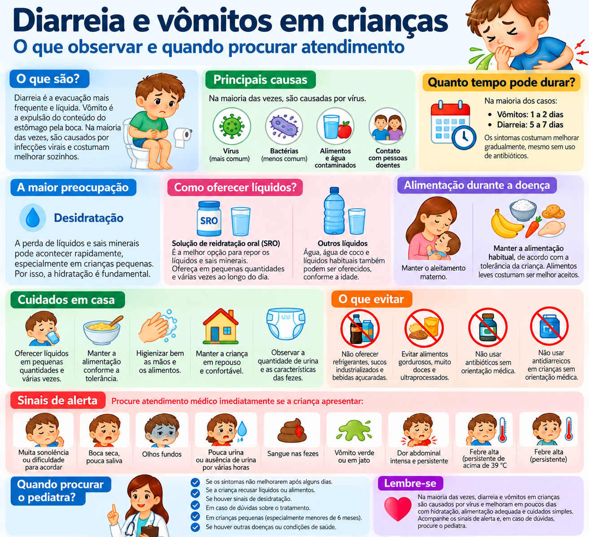

Diarreia e vômitos em crianças
O que observar, como ajudar a manter a hidratação e quais sinais indicam que a criança precisa de avaliação médica.
O que pode estar acontecendo?
O início súbito de fezes mais líquidas e/ou vômitos pode ocorrer em uma gastroenterite. Infecções virais estão entre as causas frequentes de diarreia aguda na infância, mas nem toda diarreia ou vômito tem a mesma causa.
Quanto tempo costuma durar?
Na gastroenterite, a diarreia costuma durar cerca de 5 a 7 dias e, na maioria das crianças, termina em até 2 semanas. Os vômitos geralmente duram 1 a 2 dias e, na maioria, cessam em até 3 dias.
O que observar?
Veja se a criança está alerta, consegue beber ou mamar, está urinando, mantém boa interação e se apresenta sinais de piora.
Atenção à hidratação
Diarreia e vômitos aumentam a perda de água e sais do organismo. Bebês, especialmente os menores, podem desidratar mais rapidamente.
Outros sinais possíveis incluem criança mais abatida ou sonolenta que o habitual, irritabilidade, olhos fundos, boca seca, extremidades frias ou piora do estado geral.
O que fazer em casa?
- Mantenha a amamentação. O leite materno deve continuar sendo oferecido.
- Ofereça líquidos com frequência. Quando houver indicação de reidratação, a solução de reidratação oral é a opção apropriada e deve ser preparada conforme as instruções do produto ou orientação profissional.
- Pequenas quantidades, várias vezes podem ser mais bem toleradas quando a criança está vomitando.
- Após a reidratação, a alimentação habitual deve ser retomada conforme tolerância.
- Evite sucos de frutas e refrigerantes durante a diarreia, pois não substituem adequadamente a solução de reidratação oral.
Quando procurar atendimento?
Procure avaliação médica rapidamente se houver:
- criança ficando muito abatida, letárgica, difícil de despertar ou com resposta diferente do habitual;
- diminuição importante da urina ou sinais evidentes de desidratação;
- incapacidade de beber/mamar ou vômitos persistentes que impedem a hidratação;
- vômito verde;
- sangue ou muco nas fezes;
- dor abdominal forte ou localizada, ou barriga muito distendida;
- piora progressiva do estado geral.
Bebês menores e crianças com maior risco de desidratação precisam de atenção especial.
Dúvidas frequentes
Se vomitar, devo parar de oferecer líquidos?
Não necessariamente. A reidratação oral costuma ser oferecida em pequenas quantidades e com frequência. Se a criança não consegue manter líquidos ou vomita persistentemente, deve ser avaliada.
Precisa suspender o leite materno?
Não. As recomendações orientam manter a amamentação durante o quadro e também durante a reidratação oral.
Precisa ficar em jejum?
Em geral, após a reidratação, a alimentação habitual é reintroduzida. Situações específicas podem exigir orientação diferente após avaliação profissional.
Quando a duração deixa de ser esperada?
Se os vômitos ultrapassarem o período habitual, se a diarreia não estiver melhorando ou persistir além do esperado, ou se houver piora em qualquer momento, procure orientação médica.
Infográfico: diarreia e vômitos em crianças

Fontes e revisão
Conteúdo elaborado em linguagem acessível a partir de recomendações da Sociedade Brasileira de Pediatria (SBP) e da diretriz NICE sobre diarreia e vômitos por gastroenterite em crianças menores de 5 anos.
Sociedade Brasileira de Pediatria — Diarreias
Sociedade Brasileira de Pediatria — Náuseas e vômitos em pediatria
NICE CG84 — Diarrhoea and vomiting caused by gastroenteritis in under 5s
Última revisão: setembro de 2026.